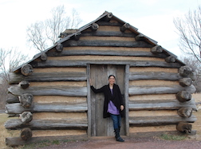

Bio
Hello, my name is Gurjit Kaur. I'm a designer and an artist. I like to create canvas art using different medium. My expertise include wall murals and multi dimensional canvas paintings. I also take keen interest in fashion design.
Teaching is another hobby I have. I do all of this on a volunteer basis. In the past few years I've been very influenced by the web world. Looking at beautiful and user friendly websites gives me pleasure. Being an artist, I look out for good use of colors and layout. I always wonder if I could make these websites myself.
My husband is a web developer and has been constantly inspiring me to become one. Looking at few of his projects have made me do this more and more. Rutgers Bootcamp was the perfect opportunity to get a formal education and learn web development.
I've a bachelors in Commerce and masters in fashion design.
My hobbies include gardening, baking, and cooking.